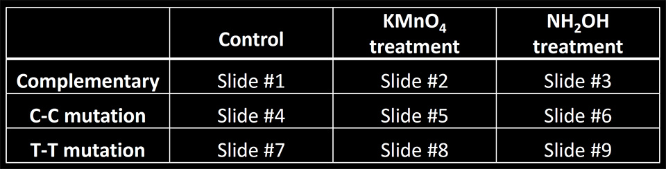
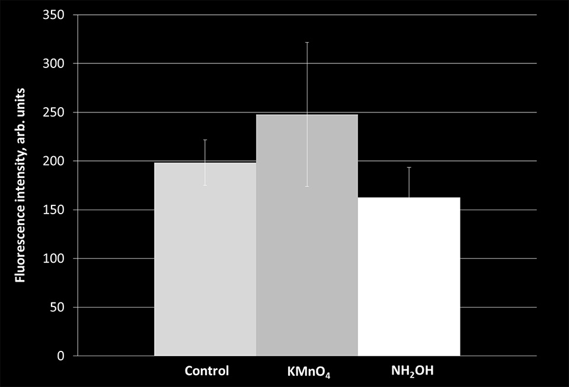

In the previous sections we showed that Chemical Cleavage of Mismatches (CCM) reactions utilizing potassium permanganate (KMnO4) and hydroxylamine (NH2OH) are selective towards thymine and cysteine bases, respectively. The rates of these reactions were studied and the optimal concentrations and incubation times for each reaction were determined. We also showed that combining these reactions with piperidine allows specific cleavage of double stranded DNA (dsDNA) at the point of a single base mutation. The dip-pen nanolithography (DPNL) printing conditions were also optimized, resulting in DNA bait strands localized in uniform sub-micron isles. We also confirmed that immobilizing ssDNA on surface preserves its functionality and those molecules are capable of hybridizing with the targets.
This section outlines cleavage experiments of single mismatches in dsDNA immobilized on solid support. The goal of these experiments was to show the validity of our approach to generating a binary code that can be used to uniquely identify a mismatched base in the target strand.
Hydroxylamine (NH2OH), potassium permanganate (KMnO4), dimethylamine ((CH3)2NH), and piperidine were purchased from Sigma-Aldrich and used without further purification. Epoxy functionalized glass slides were purchased from ArrayIT corporation. Custom designed 60 base-long oligonucleotides (bait and target strands) were purchased from IDT-DNA. The bait strand sequence was the same for all printing experiments. The bait strand was functionalized with an amino group at 5' end to enable attachment to epoxy functionalized glass slides. The three target strands differed in only one base so that upon hybridization with the baits, target strand 1 had a single C-C mismatch with the bait, target strand 2 had a single T-T mismatch with the bait, and target strand 3 formed a full complement with the bait. The targets were also functionalized with an ATTO488 fluorophore at 5' end. DPNL was used to print 1.0 mM bait strand solution onto the slides at the optimal printing conditions. The printed slides were then incubated for 2 hours with a 0.1 mM target solutions. A total of 9 slides were printed for different experimental trials. Each slide was used to test for a specific CCM reaction as shown in Table 1. Hydroxylamine treatment was carried out using a 3.43 M solution of NH2OH at pH 6.0 adjusted using (CH3)2NH. 12 hour Incubation was carried out for the slides that underwent hydroxylamine treatment. Potassium permanganate treatments were performed using 10 mM KMnO4 solution and the incubation time of 6 minutes. After the incubation the slides were gently rinsed with deionized water. Piperidine solution of 0.1 mM concentration was then applied to the printed side of the slide. Incubation of 15 minutes proceeded for piperidine solution and the slides were then washed gently with diH2O. Imaging and fluorescence intensity analysis performed on the printed isles was conducted on a confocal microscope (ISS).
First, the slides that contained fully complementary hybridized bait and target strands were exposed to the CCM reactions. In all three cases (KMnO4, NH2OH, and control) the fluorescence signal originating from the printed isles was comparable (Figure 1).
